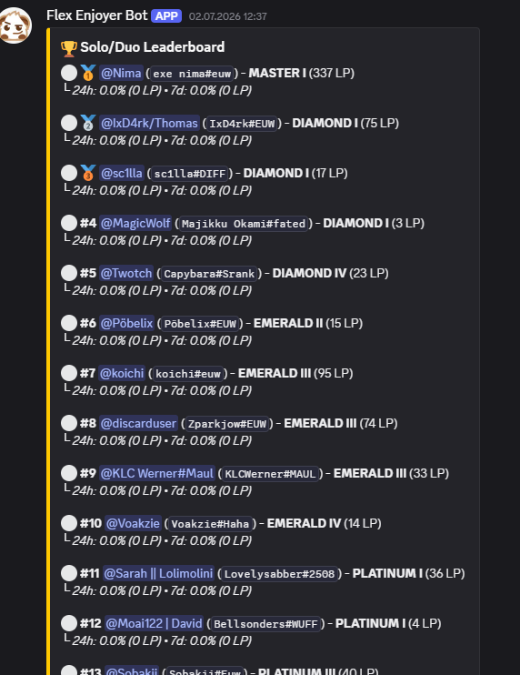
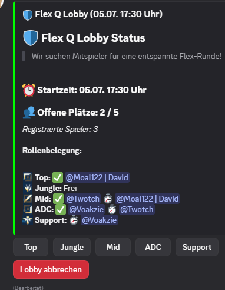

Welcome to the official documentation page for the Flex Enjoyer Discord application. This bot is a private, community-driven tool designed to enhance the League of Legends experience for our local Discord server.
Users can create scheduled "Flex Queue" lobbies. The bot utilizes Riot API to ensure only registered summoners can join and pings the party when the match is about to start.
The bot fetches Ranked Solo/Duo and Flex SR data (Tiers, LP, Winrates) via the Riot API to create an internal, competitive server leaderboard updated every 10 minutes.
Using the Spectator API, the bot detects when registered players enter a Ranked match and posts a live notification in our Discord, allowing server members to view live stats.
Here is a look at the bot functioning within our Discord environment:

